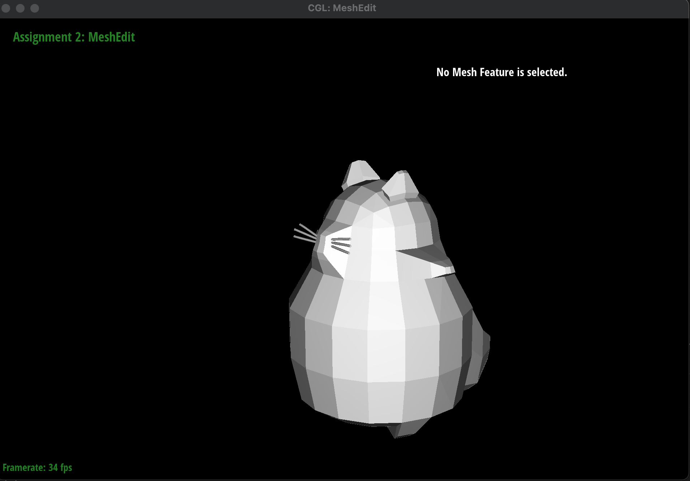
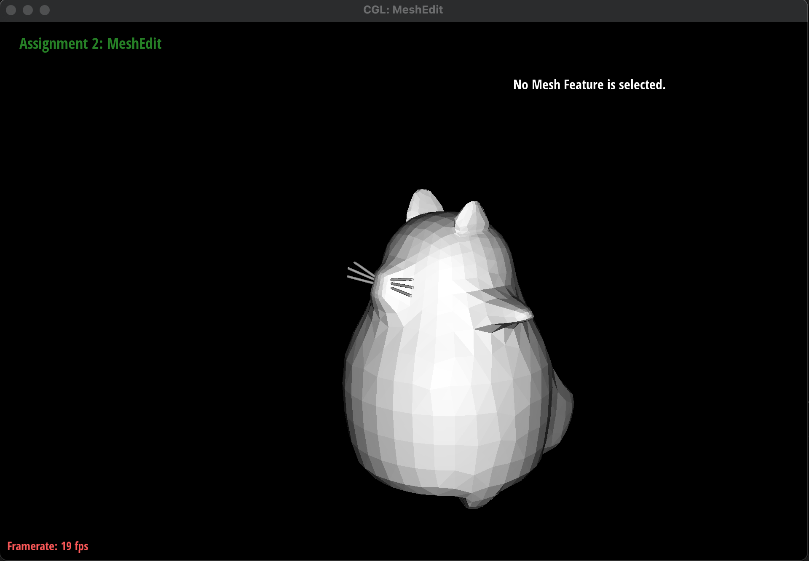
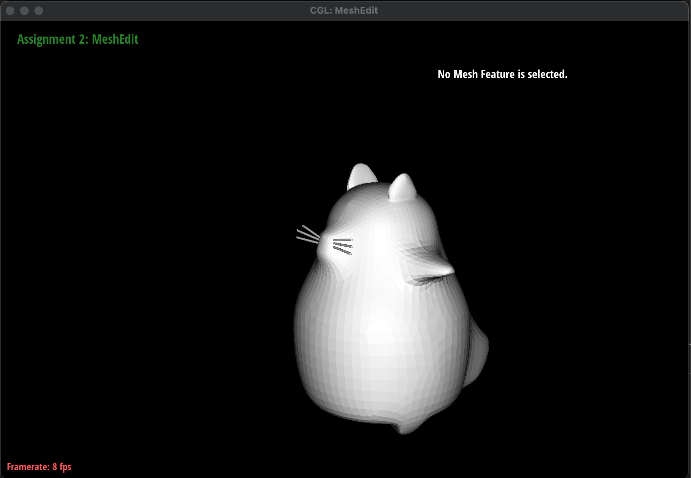

CS184/284A Spring 2025 Homework 2 Write-Up
Link to webpage: cal-cs184-student.github.io/hw-webpages-totoro-page/hw2
Link to GitHub repository: github.com/cal-cs184-student/sp25-hw2-totoro-2

Overview
Give a high-level overview of what you implemented in this homework. Think about what you've built as a whole. Share your thoughts on what interesting things you've learned from completing the homework.
In this homework, we implemented Bezier curves using the de Casteljau algorithm, and learned how to recursively compute intermediate control points through linear interpolation to create smooth curves and surfaces. We extended this algorithm to compute Bezier surfaces by applying the de Casteljau algorithm in two dimensions.
We also learned how to represent surfaces with triangle meshes, which are collections of triangles that can be used to approximate complex shapes. We worked with a half-edge data structure to represent these triangle meshes, which allowed us to efficiently store and manipulate mesh data. This data structure is particularly useful when we implemented mesh operations like edge flips, edge splits, and loop subdivision. Edge flips and splits allowed us to manipulate the mesh topology, while loop subdivision allowed us to upsample the mesh and create smoother surfaces. We also implemented area-weighted vertex normals for Phong shading, which is important for rendering smoother and more realistic images.
Working with triangle meshes was particularly tedious, since we had to be careful about reassigning pointers of every single element in the mesh while keeping track of new and old elements, especially for edge splits and loop subdivision, but we learned a lot about how to represent and manipulate complex shapes in computer graphics. It also gave us a deeper appreciation for smooth shading and how it can be achieved through careful mesh manipulation, and we also realized how much data we need to store in order to represent a mesh.
Section I: Bezier Curves and Surfaces
Part 1: Bezier curves with 1D de Casteljau subdivision
Briefly explain de Casteljau’s algorithm and how you implemented it in order to evaluate Bezier curves.
De Casteljau's algorithm evaluates Bezier curves by successively computing intermediate control points through linear interpolation. The algorithm starts with a set of n control points and recursively reduces the number of control points by interpolating between adjacent points. The recursive process continues until a single final point is reached, which lies directly on the Bezier curve at the specified given parameter \(t\). We use the equaion to recursively compute the \(n-1\) intermediate control points in the next level by using the equation \[p'_i = lerp(p_i, p_{i+1},t) = (1-t)p_i + t*p_{i+1}\]
We implemented this algorithm in our code by creating a new 2DVector called new_points to store our intermediary control points at each level. We iterated from 0 to n-1, and within each iteration, we calculated the LERP for both the x and y coordinate with the equation \[(1-t)p_i + t*p_{i+1}\] We stored the LERPed x and y within a new 2DVector and used push_back to insert it into our new_points. We return all of the intermediary points at the end of this evaluation function, and after running this evaluation function n-1 times by pressing E on the GUI, we can display all of the intermediate control points from each level, as well as the final evaluated point and the final Bezier curve.
Table with Bezier curves cycling through all the levels

|
|
|
|
|
|

|

Part 2: Bezier surfaces with separable 1D de Casteljau
Briefly explain how de Casteljau algorithm extends to Bezier surfaces and how you implemented it in order to evaluate Bezier surfaces.
We can extend the de Casteljau algorithm to Bezier surfaces by applying the same recursive interpolation process across parameters u and v instead of just parameter t. Since a Bezier surface is defined by a (NxN) 2D array of control points, we can think of it as a collection of Bezier curves in both the u and v directions. This allows us to evaluate the surface at any point by interpolating between the control points in both dimensions.
To implement this, we first write a helper function to recursively interpolate between 3D points (instead of just 2D points like we did for Bezier curves) for a single parameter t until we reduce down to a single final point. This involved calculating the same recursive equation for the x, y, and z dimensions \[p'_i = (1-t)p_i + t*p_{i+1}\] and looping until we hit a single final point. Once we have our 3D helper functions, we apply the de Casteljau algorithm to our (NxN)patch along the u dimension, effectively reducing each row into a single point. Once we've reduced over our rows and produced N intermediate control points, we apply the algorithm again along the other dimension v to reduce over the column and compute the final point on the surface, allowing us to extend de Castelaju to evaluate Bezier surfaces.

Section II: Triangle Meshes and Half-Edge Data Structure
Part 3: Area-weighted vertex normals
Briefly explain how you implemented the area-weighted vertex normals.
To implement area-weighted vertex normals, we first grab the class member variable position and the halfedge, and make sure to store the original halfedge. We also initialize a curr_normal vector to be (0,0,0) and we'll use this vector to accumulate the sum of the triangle areas. We then iterate through all the faces incident to the current position, and within each face, we grab the neighboring vertices and the corresponding edges. Once we have all 3 edges of the current face, we compute the triangle normal of this specific face by taking the cross product, and compute the triangle area by taking \[0.5|a||b|sin\theta\] which is equivalent to taking half of the norm of the cross product. We add the triangle area to the curr_normal vector and then iterate to the next face by calling h = h_twin->next() where h_twin is the twin of the starting half edge of that face. We continue iterating until h == original, which signals that we're back to the starting point. Lastly, we return the unit() of the final curr_normal since we don't care about the magnitude of the vertex normal - just the direction.
|
|
|
Part 4: Edge flip
Briefly explain how you implemented the edge flip operation and describe any interesting implementation / debugging tricks you have used.
The edge flip operation on a shared edge between 2 triangles (a,b,c) and (c,b,d) involves flipping the shared edge (b,c) to convert the triangles into (a,d,c) and (a,b,d). We implemented the edge flip operation by first grabbing all of the current elements in the mesh, including all half edges, edges, vertices, and faces. We make sure to check if either of the faces adjacent to the given halfedge e0 is on a boundary loop - if it is, we just return immediately. If not a boundary edge, we then went through each element in the modified edge and reassigned its pointers to the correct element in the modified mesh with the edge split. This meant that we reassigned the halfedge pointer for each vertex, face, and edge, and then reassigned the next, twin, vertex, edge, face pointers for each halfedge element. Once we reassigned all the pointers, we returned the new mesh. It was very useful to draw out a map of every single element before and after the flip and label our variables corresponding to our drawn map, otherwise we got very lost when trying to reassign pointers.
As for debugging: when we first tried implementing flip edge, we tried to get away with not having to reassign every single pointer and it didn't work and ended up giving us a lot of holes when we flipped an edge more than one time. We then tried using setNeighbors to set all the attributes of each halfedge at once, which seemed to work, but we also had a few occasional holes pop up. We also ran into a flip case which created a dent in the teapot and thought that we had a buggy implementation, so we redid our whole flip operation with the very thorough pointer reassignment for every single mesh element. However, we realized we still had the dent case, so we went into office hours and realized that the dent was expected behavior.
|
|

|
|
|
|
Part 5: Edge split
Briefly explain how you implemented the edge split operation and describe any interesting implementation / debugging tricks you have used.
We implemented edge split by first saving all elements(halfedges, vertices, faces) before adding or changing any elements. We save this copy to keep a snapshot of the original mesh as reference. Before we reassign pointers, we need to create a new vertex of the midpoint, new halfedges, edges, and faces that is a product of our splitting operation. This is because splitting an edge results in more elements added to the mesh. Next, we start reassigning elements accordingly just like we did in edgeFlip function. Keeping track of all the right pointer assignments was the hardest part and we found that drawing a diagram of the before and after components helped with debugging a lot. Below is a zoomed-in screenshot of applying edge split on two edges.
|
|
|
As for extra debugging, we realized there was a bug in task 5 only after implementing task 6--we were seeing some edges undergoing more edge splits than necessary when undergoing loop subdivision. After thoroughly checking the pointer assignments done in task 5, we noticed that we forgot to assign the vertices of the face to their corresponding halfedges, which resulted in incorrect mesh traversals in task 6. Task 6 was also solved after we assigned correct halfedges to the vertices.
Part 6: Loop subdivision for mesh upsampling
Briefly explain how you implemented the loop subdivision and describe any interesting implementation / debugging tricks you have used.
Loop subdivision involves two steps: subdividing each triangle in the mesh into four by connecting all of their edge midpoints(4-1 subdivision) and then updating all the vertex positions as an weighted average of each of their neighboring vertex coordinates. This is the high-level overview, but implementing this requires more detail.
Starting with 4-1 subdivision, we first computed new positions for all vertices in the original input mesh before doing any editing of the mesh. We calculated each position of an old vertex as (1 - n * u) * original_position + u * original_neighbor_position_sum where n is the vertex degree and u = 3/16 if n=3, otherwise u = 3/(8n). This new position data is stored as a Vertex::newPosition attribute, since we only want to update the vertex position after all edits on the mesh are done. Similiarly, we also precompute the positions of all the midpoints that will be added after the edge split operation. We calculate each position of an new vertex to be added as (3/8) * (A + B) + (1/8) * (C + D) where A, B, C, and D are vertices that surround a split edge and A-B edge is the edge that is split.
We then proceed to implement 4-1 subdivision by first splitting all the old edges in the mesh and then flipping only the new edges that connect an old vertex with a new vertex. Specifically, we traverse through all the old edges of the mesh by checking if the two vertices are both not new while marking the newly added vertex as new to avoid infinity loops. Then we traverse through all the new edges of the mesh and flip them only if the XOR of the two vertices connecting the edge is true(i.e. v0 is new while v1 is not, or vice versa).
Finally, we traverse through all the vertices and update their positions with Vertex::newPosition to reflect the true, updated position of each vertex after all mesh editing operations are finished.
|
|
|
Take some notes, as well as some screenshots, of your observations on how meshes behave after loop subdivision. What happens to sharp corners and edges? Can you reduce this effect by pre-splitting some edges?
Loop subdivision allows our meshes to have much smoother surfaces. Here are some screenshots of the cow mesh where we compare the before and after for subdivisions. We also see that sharp corners and edges "die" down as well as they are smoothened out. We can prevent such collapses of our sharp edges by pre-splitting edges. This works since pre-splitting increases the number of edges, thus increasing the number of vertices to be used as control points. This affects our averaging done during loop subdivision to reflect finer differences and, thus, preserving sharp features at a better granularity.
|
|
|
|
|
|
Can you pre-process the cube with edge flips and splits so that the cube subdivides symmetrically? Document these effects and explain why they occur. Explain how your pre-processing helps alleviate the effects.
The asymmetric aspect arises during subsequent subdivisions because each face has only one diagonal edge going across. However, by splitting this edge on each face of the cube (resulting in a total of 4 edges for each cube's face) can help make the cube symmetric. This is because with this pre-processing edge-split, each face of the cube now has exactly the same configuration, and it makes the cube look much more symmetrical like a dice after loop subdivision rather than a lopsided lemon.
Section III: Potential Extra Credit - Art Competition: Model something Creative
Describe what you have done to enhance your mesh beyond the simple humanoid mesh described in the tutorial
We designed a Totoro mesh (from My Neighbor Totoro) in Blender and had to do more detailed extrusions and resizings in order to create his specially shaped legs, ears, arms, tail, and whiskers. For the whiskers, we first created them as Bezier curves with a diameter of 0.02m, then converted the Bezier curve to a mesh, reduced the number of faces on the mesh with a Decimate modifier in Blender, and then combined the whiskers mesh with the body mesh. We also ran into some issues when we first tried to model Totoro by using the mirror modifier in Blender to symmetrically design his features, but this caused the mesh to be non-manifold and unable to be rendered with our program, so we had to start designing Totoro from scratch and made sure to not rely on the mirror aspect.
|

|

|

|